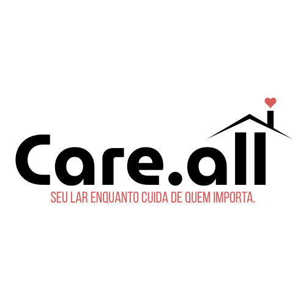

Quem Somos?
A Care.All é uma startup de impacto social e uma iniciativa sem fins lucrativos que nasceu da necessidade de oferecer dignidade e acolhimento a pacientes e seus acompanhantes que precisam se deslocar de locais distantes em busca de tratamentos médicos especializados.
Nosso propósito é reduzir o peso emocional e financeiro na vida de famílias passando por um período sensível, oferecendo apoio e conforto por meio de espaços seguros para se acomodarem durante todo o processo de cura.

Nossa missão
Promover cuidado, acolhimento e dignidade para pacientes e acompanhantes, conectando famílias a hospedagens seguras por meio da tecnologia e de uma rede solidária de apoio.
Nossa visão
Ser referência em hospitalidade solidária e tecnologia social, começando pela Região Metropolitana do Recife e ampliando o acesso a espaços de acolhimento para famílias que enfrentam longas jornadas em busca de tratamento.
Nossos valores
Empatia
Reconhecemos a dor de pacientes e acompanhantes que enfrentam longas viagens, incertezas e desafios durante o tratamento.
Dignidade
Acreditamos que toda pessoa merece um espaço seguro e respeitoso para descansar, especialmente em momentos de fragilidade.
Solidariedade
Conectamos famílias, instituições, voluntários e apoiadores para transformar hospitalidade em cuidado real.
Inovação com propósito
Usamos a tecnologia como ponte entre quem precisa de acolhimento e quem pode oferecer apoio de forma segura.
Por que a Care.All existe?
Muitas famílias precisam sair do interior para realizar tratamentos médicos na Região Metropolitana do Recife. Essa rotina pode envolver longas viagens, custos elevados, desgaste físico e emocional, além da dificuldade de encontrar um local adequado para permanecer.
A Care.All surge como resposta a essa dor invisível, ampliando as possibilidades de hospedagem e fortalecendo uma rede de apoio baseada em cuidado, segurança e solidariedade.
Cuidado também é ter onde ficar
Conheça as opções de hospedagem disponíveis e encontre espaços pensados para oferecer acolhimento, segurança e proximidade aos centros médicos.
Conhecer hospedagens